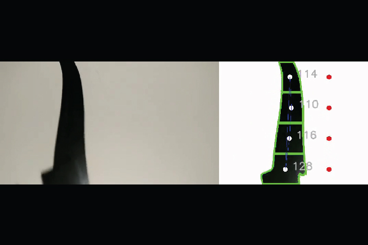
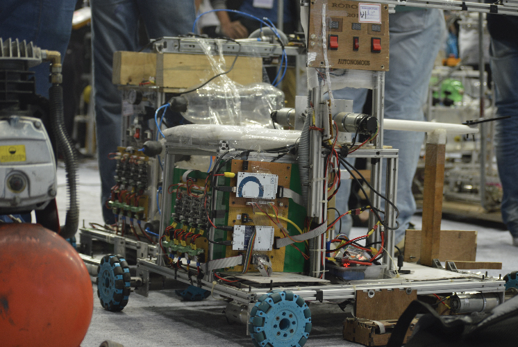
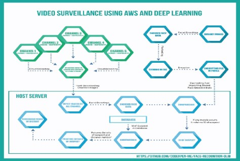
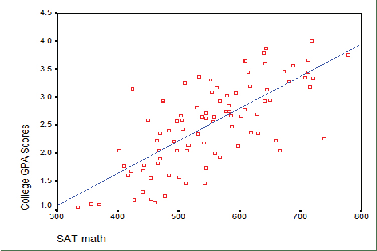
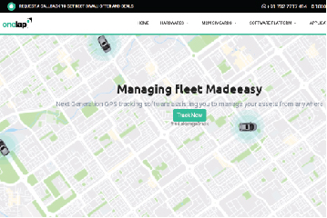
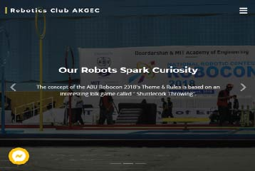
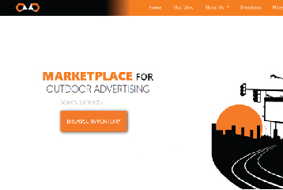
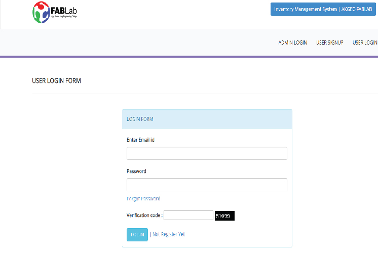

Full-stack builder
Built products end to end: APIs, dashboards, admin panels, database-backed apps, deployment scripts, and frontend interfaces.
San Francisco Bay Area · AI infrastructure · distributed systems
I am a Software Development Engineer II at Amazon Web Services, working across AI agents, distributed systems, developer infrastructure, cloud automation, and operational safety.
My work sits where AI meets real production constraints: long-running workflows, safe tool use, human approval, deterministic state, observability, rollback paths, and systems engineers can trust after the demo.

Agents, cloud platforms, developer infrastructure, reliability, and safe automation.
The arc
The through-line is building useful systems that carry real operational weight. The tools changed. The taste stayed: reduce ambiguity, make failure visible, and give people leverage without hiding the risk.
Built products end to end: APIs, dashboards, admin panels, database-backed apps, deployment scripts, and frontend interfaces.
Worked on core banking APIs, transactional systems, production debugging, and one-click deployment workflows.
Owned Tier-1 orchestration, lifecycle automation, observability, configuration systems, and cloud-region workflows.
Now focused on agents, AI-assisted engineering workflows, evals, structured handoffs, approval gates, and safe tool use.
Work pillars
Four overlapping muscles: AI systems, distributed infrastructure, developer platforms, and operational safety.
I build agentic systems that coordinate planning, implementation, review, validation, memory, and human approval inside real engineering workflows.
I design backend and orchestration systems where reliability, blast-radius control, isolation, and operational visibility matter.
I like building tools that compress slow engineering workflows into reliable self-service systems used by real teams.
I care about the contract between automation and accountability: what gets checked, who approves, what is logged, and how systems recover.
Selected work
These are public-safe summaries of production work. Internal names, proprietary implementation details, and operational mechanics are intentionally omitted.
AI systems
Built a production-grade multi-agent system that helps engineering teams coordinate planning, design, implementation, review, validation, cleanup, notifications, observability, and memory.
GenAI review
Designed a GenAI-assisted approval workflow combining model reasoning, dynamic validation, policy checks, retrieval, and safe tool orchestration for risky operational changes.

AI infrastructure
Implemented structured handoffs, context management, retry behavior, recovery logic, validation gates, and operational monitoring for long-running AI workflows.
Distributed execution
Architecting a regionalized serverless execution platform for large-scale operational workloads, replacing manually managed scheduled jobs with a unified self-service model.
Cloud automation
Led automation work across infrastructure domains, replacing manual coordination with repeatable pipelines, validation, notifications, and self-service tooling.
Control plane
Led work on Amazon Redshift cloud data infrastructure, improving lifecycle workflows, dynamic configuration, testing, observability, cost efficiency, and regional onboarding.
Banking platform
Designed an internal deployment platform for dynamically provisioning banking microservices, turning a long manual rollout process into a repeatable self-service workflow.
Capability map
I do not think of AI work as separate from software engineering. The hard part is stitching models, tools, state, infra, validation, and human judgment into one reliable product surface.
Multi-agent orchestration, tool-using LLM workflows, LangGraph, context engineering, structured outputs, RAG, evals, validation, observability, and safety guardrails.
Java, Python, Go, TypeScript, C/C++, microservices, REST/GraphQL APIs, workflow orchestration, control-plane services, and high-availability systems.
AWS CDK, ECS/Fargate, Lambda, Step Functions, SQS, DynamoDB, S3, CloudWatch, AppConfig, IAM, Docker, Kubernetes, and CI/CD.
Node.js, Express.js, Angular, React, MongoDB, MySQL, PostgreSQL, admin panels, dashboards, frontend component systems, and production deployments.
Experience
San Francisco Bay Area · Amazon Redshift
Production AI agents, distributed execution platforms, developer infrastructure, region-build automation, security reviews, and operational safety.
Dublin, Ireland · Amazon Redshift
Tier-1 orchestration, lifecycle workflows, dynamic configuration, observability, automated testing, cost efficiency, and regional onboarding.
Dublin, Ireland · Amazon Redshift
Distributed backend services, operational automation, internal tooling, workflow orchestration, and high-availability cloud systems.
Bengaluru, India
Core banking APIs, production debugging, strict consistency systems, and a one-click deployment platform for cloud microservices.
Remote / Pune
Node.js and TypeScript APIs, Angular SPAs, database schemas, reusable UI components, CI/CD, and Dockerized deployment.
Delhi NCR
MEAN-stack applications, admin panels, CMS-like tooling, backend APIs, MongoDB storage, and AWS EC2 deployments.
How I build
I am most interested in AI systems that survive contact with real engineering environments: unclear requirements, partial context, risky tools, long-running tasks, production constraints, and humans who need to trust the outcome.
State, validation, ownership, and recovery make AI useful in production.
Agents need contracts: inputs, outputs, handoffs, retry behavior, audit trails, and stop conditions.
Human approval should be designed into the workflow, not bolted on after risk appears.
The best automation reduces risk and cognitive load at the same time.
Builder archive
These older projects are intentionally framed as an archive: robotics, computer vision, full-stack products, APIs, dashboards, and experiments from the years before my current AI infrastructure focus.

Python · OpenCVDetected line curves and angles for robotics navigation experiments.

Robocon · Embedded systemsComputer-vision work from robotics competitions and embedded automation.

DLib · OpenCV · AWSFace-recognition and surveillance prototype using deep learning and cloud compute.

Python · StatisticsEarly machine-learning fundamentals, implemented directly in Python.
Backend API system for bookings, data modeling, and service deployment.
MongoDB · Express · Angular · NodeFull-stack company site and admin tooling from early product work.

Angular · Node.js · BootstrapFrontend and backend build for a web product prototype.

HTML · CSS · PHPRobotics community website from college builder years.

Django · HTML · CSSWeb application build with backend, templates, and deployment work.

MySQL · PHP · BootstrapInventory workflow software for a campus fabrication lab.
Thinking topics
Public-ready topics I like discussing with engineers, founders, and teams building serious AI systems.
About
My path has moved through robotics, full-stack products, core banking, cloud infrastructure, and now production AI systems. The through-line is simple: I enjoy turning messy, high-stakes workflows into systems people can rely on.
I have mentored engineers, written design documents, led technical direction across teams, and helped turn manual engineering work into repeatable platforms. I am especially curious about AI agents, cloud AI, developer tools, critical infrastructure, and the engineering craft needed to make autonomy accountable.
Contact
Reach out if you are building AI infrastructure, coding agents, developer platforms, cloud AI systems, or reliability-heavy backend systems. I also enjoy thoughtful conversations about distributed systems, agents, engineering craft, and safe automation.